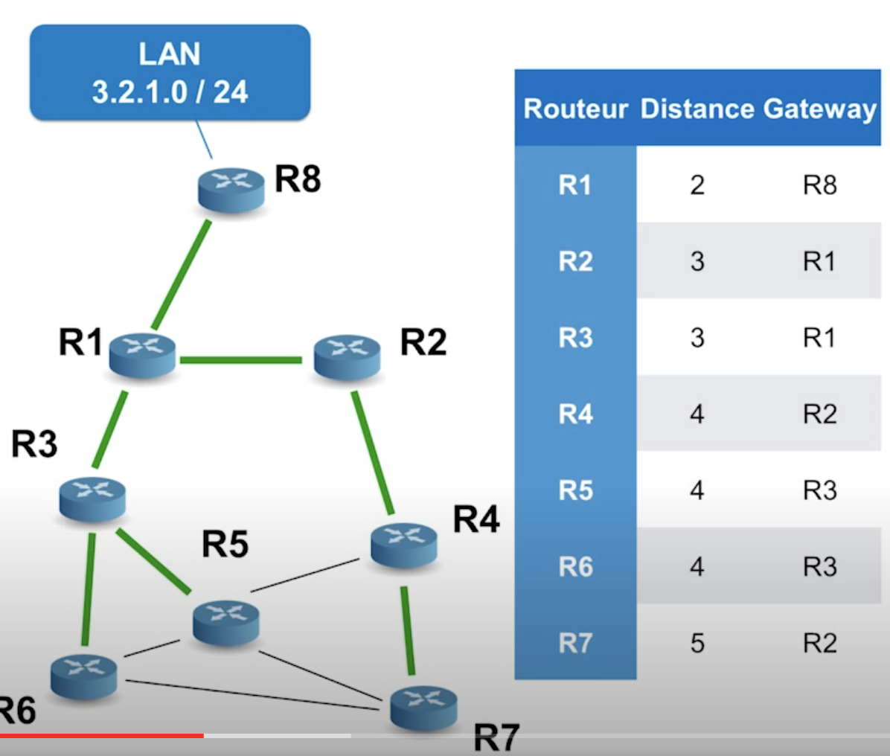
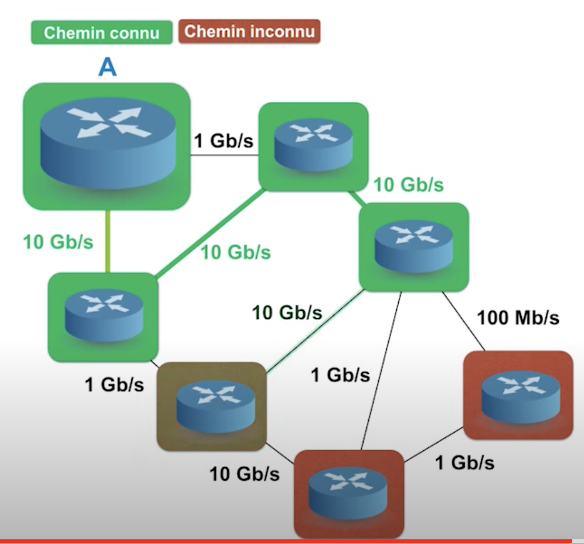
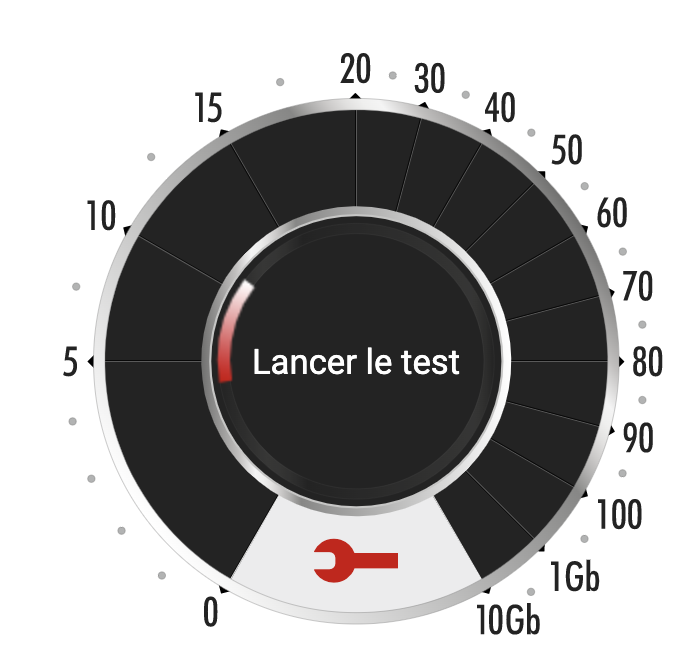

protocoles de routage
Ce cours comporte plusieurs pages:
- cours sur les graphes. Term NSI
- modele OSI et TCP/IP. 1ere Nsi
- graphes et internet
- Protocoles de routage
- algorithmes de parcours des graphes
- algorithme de Dijkstra
- Activite sur les arbres couvrants
- Arbres
Routage statique et dynamique
Pour un reseau de petite dimension, on peut envisager d’utiliser une table de routage statique, comme vue dans le cours graphes et internet.
Par contre, pour des reseaux de grande taille, il faudra une méthode permettant de construire et mettre à jour cette table de manière dynamique. Il existe 2 protocoles pour réaliser cela, RIP et OSPF.
Ces protocoles vont permettre aux routeurs d’échanger des informations entre eux, afin d’avoir un aperçu des réseaux autour d’eux. Ils vont déterminer le meilleur chemin en fonction de l’état du réseau. Ils se basent sur un critère, ou plutôt un coût associé à chaque chemin: il s’agira du nombre de sauts (routeurs traversés) ou bien de l’estimation de la durée d’acheminement (loi sur le débit).
Ces protocoles doivent eviter les boucles de routage, et corriger les données de routage selon l’evolution du reseau (nouvelles machines, ou pannes, engorgement).
Chaque modification du reseau va entrainer un temps d’echange entre les routeurs, jusqu’à ce que ceux-ci finissent par établir une nouvelle table de routage.
- Voir le cours en detail sur dlatreyte.github.io
protocoles de routages dynamiques
Les routeurs vont s’adapter à un réseau qui évolue au cours du temps (ajout ou suppression de routes, panne d’un routeur, etc..). Pour cela les routeurs se transmettent des informations pour qu’ils puissent mettre à jour leur table de routage.
Activité
Pour chacune des videos, au cours de leur visionnage, prendre en notes pour repondre aux questions suivantes:
Le routage à vecteurs de distance

Video (Youtube): Mooc de l'INT (institut des Mines Télécom)
Les routage à états de liens
Video (Youtube): Mooc de l'INT (institut des Mines Télécom)
- Pour le routage étudié, un routeur connait-il la carte globale du reseau (quel routeur est connecté à tel autre)?
- Pour le routage étudié, s’agit-il des protocoles RIP ou OSPF?
- communique t-il avec ses voisins directs, ou avec l’ensemble du reseau?
- communique t-il aux autres routeurs de gros ou petits volumes d’informations pour établir sa table de routage?
- un routeur, connait-il le chemin exact pour atteindre n’importe quel routeur du reseau?
- connait-il le nombre de sauts pour atteindre n’importe quel routeur du reseau?
- selectionne t-il le routeur voisin qui va donner le plus court chemin en nombre de saut / en durée d’acheminement? (Question de l’exercice n°4 du sujet de baccalaureat 2021, Polynesie)
- Comment met-il à jour sa table de routage lorsqu’il y a une modification du reseau?
Routage à vecteur de distance

exemple de table de routage à vecteur de distance
Un vecteur de distance est une donnée constituée de (adresse du reseau, nombre de sauts, gateway)
Coût associé au chemin: Le nombre de sauts (routeurs traversés)
Exemple de protocole: Routing Information Protocol, RIP (basé sur l’algorithme de Bellman et Ford)
Mise à jour de la table de routage: Les routeurs envoient leur table de routage (complète ou non), aux routeurs voisins de façon périodique. Lorsque le routeur reçoit la table de routage du voisin, il met à jour sa table à partir de ces informations: pour chaque vecteur de distance donné par le routeur voisin, il incrémente la valeur du nombre de sauts d’une unité, et compare avec sa table:
- Si le coût est inférieur à celui de sa propre table, ou s’il s’agit d’une nouvelle adresse, il remet celle-ci à jour en considérant ce nouveau chemin.
- Si le coût de l’une de ses entrées dans la table semble augmenter, il peut aussi s’agir d’une modification du reseau (panne, route coupée…). Il met à jour le nouveau coût pour son vecteur de distance.
Ainsi, les informations vont circuler de proche en proche, très rapidement. Le routeur ne connait pas la route précise pour atteindre une adresse dans le reseau, mais la passerelle à prendre pour optimiser le coût du chemin (distance, ou métrique la plus petite).
Inconvenients de cette méthode:
- il peut survenir des problèmes de convergence des données en cas de coupure d’une route sur le reseau (boucles, voir video). Le temps de convergence, même sans ce problème de boucle est relativement long. D’autant plus que le reseau est grand.
- Il peut y avoir des itinéraires qui bouclent (voir video plus haut).
Protocole RIP: (Routing Information Protocol). Issu des travaux de Bellman-Ford (publiés en 1956 et 1958), il a été développé par l’université de Californie. Il est utilisé initialement pour ARPAnet, ce qui en fait son grand succès.
- RIP utilise une métrique à nombre de sauts (hop en anglais, correspond au nombre de routeurs à traverser pour arriver à destination). Le nombre de sauts est limité à 15.
- Chaque routeur envoie sa table de routage à ses voisins toutes les 30 secondes.
- Si une route n’est pas actualisée pendant 180s, elle est supprimée de la table
Routage à états de liens

exemple de table de routage à états de liens
Coût associé au chemin: homogène à une durée d’acheminement, calculé sur le débit des différentes sections du chemin. Dépend de l’encombrement, état du réseau, …
Exemple de protocole: Open Shortest Path First, OSPF: algorithme à état de liaison, basé sur la recherche du plus court chemin (Dijkstra).
Mise à jour de la table de routage: Le routeur envoie des petits messages, de type bonjour dans le reseau, et mesure la durée de reponse. Il construit un paquet spécial contenant les informations qu’il vient de découvrir, avant de la diffuser à tous les autres routeurs. Il établit ainsi une table avec, pour chaque adresse la mention d’une métrique qui depend du debit de chaque liaison, et déduit le plus court chemin vers chaque destination à partir de l’algorithme de Dijkstra. La métrique est obtenue en additionnant les coûts de chaque liaison.
Avantages:
- Plus de problème de boucle puisque la mise à jour des routeurs se fait simultanément.
- En théorie, pas de limitation de la taille du réseau.
Inconvénient : Les tables de routage croissent avec le nombre de routeurs dans un réseau. Ce qui nécessite plus de mémoire au sein des routeurs et plus de temps pour explorer les tables.
Exercice n°3 du sujet de baccalaureat Metropole-2 2022: représentations binaires et protocoles de routage. (RIP, OSPF), minimiser le nombre de routeurs à traverser pour une requête.
Exercice n°3 du sujet de baccalaureat Metropole-2 2023: réseau Arpanet
Exercice n°2 du Centres etrangers J1 2024: reseaux, adresses IP, …
Débit
Le debit est la vitesse à laquelle sont échangées les données, expimée en bits/s (ou kb/s, Mb/s…). Le débit se définit par le rapport du nombre de données circulant (en bits), par la durée (s).
$$D = \tfrac{N}{s}$$Pour assurer une navigation correcte sur Internet ou regarder la télé ou des vidéos en streaming, le debit minimum doit être de 8Mb/s.
En 2022, l’objectif est de fournir en france, à tous les foyers, le THD (très haut débit), soit 30Mb/s.
Avec la fibre, ce débit est encore dépassé (quelques centaines de Mb/s).

de nombreux sites proposent un test de debit pour votre connexion internet
La notion de coût d’une liaison (OSPF)
$$cout = \tfrac{10^8}{debit}$$| Type de réseau | Coût par défaut |
|---|---|
| FDDI, FastEthernet | 1 |
| Ethernet 10 Mbps | 10 |
| E1 (2,048 Mbps) | 48 |
| T1 (1,544 Mbps) | 65 |
| 64 Kbps | 1562 |
| 56 Kbps | 1758 |
| 19.2 Kbps | 5208 |
voir complements sur developpez.com
Liens
Videos présentées dans cette page
- Video (Youtube): reseaux, adresses IP et masques de sous-reseaux
- Video (Youtube): Mooc de l’INT (institut des Mines Télécom)
- Video (Youtube): Mooc de l’INT (institut des Mines Télécom)
Autres documents
- Page inspirée du cours de dlatreyte.github.io
- cours complet de niveau term NSI sur les reseaux autonomes: infoforall
- Comparatif RIP/OSPF: cisco
- autres exercices sur les algo de routage http://www.netlab.tkk.fi/opetus/s38121/s01/Exercises/solution3.pdf et https://www.netlab.tkk.fi/opetus/s38122/s00/Exercises/Exercise-3.pdf
- Très bon document illustré sur l’algorithme de Bellman Ford: ressources.aunege.fr